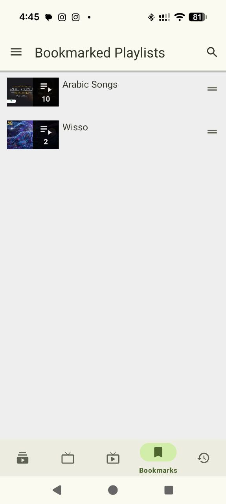

A look inside
Familiar controls.
A flexible library.
Real screenshots from the WizeStream repository, shown without recreating or inventing app screens.

Playback and comments
Video details with background, popup and download actions.

Channel browsing
Local subscription, channel tabs and supported stream filters.

History and progress
A history view with watch progress and content filters.

Bookmarked playlists
Saved playlist entries inside the local library.
Make room for what you enjoy
Your next stream starts here.
Free and open-source software for Android. Choose the build that fits your device.